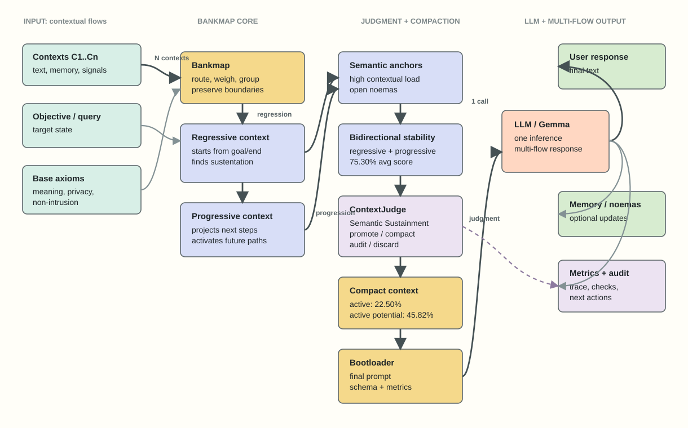

NoemaKernel / Bankmap
Architecture graph for Bankmap, bidirectional context evaluation, ContextJudge, compact context preparation and multi-flow LLM output. The SVG version renders directly on GitHub and in browsers.

Architecture graph for Bankmap, bidirectional context evaluation, ContextJudge, compact context preparation and multi-flow LLM output. The SVG version renders directly on GitHub and in browsers.
